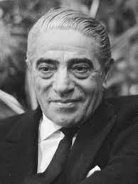

Aristotelis Onasis
1906 - 1975
One of the richest people in the 20th century
Aristotle Socrates Onassis (Greek:Ἀριστοτέλης Aristotélēs ,Aristotelis Onasis;
20 January 1906 - 15 March 1975),[1]commonly called Ari or Aristo Onassis, was a
Greek-Argentine shipping magnate ,who ammassed the world's largest privately owned shipping
fleet and was one of the worlds richest and most famus men.

The most well-known portrait of Onassiss
The following list is a time line of Onassis Life
- 1906- born in Karatas,Smyrna,Ottoman Empire
- 1922- He left from Smyrna during the great fire of
Smyrna in 1922
- 1932- He went to Buenos Aires, Argentina and
started working as a telephone operator
- 1939- He relocated to New York and started
his shipping businesses
- 1946- Onassis married Athina Livanos,
daughter of shipping magnate Stavros G. Livanos and
Arietta Zafrikakis, on the 28th December 1946. The couple
had become largely seperated by the mid-1950s
- 1950- Onassis had success whaling off
the peruvian coast
- 1953- In Monaco he started to purchase
the shares of Monaco's SMB using the tax haven of Panama
and finally
take the control of SBM
- 1954- Cancelation of the agreement between
the Saudi government and Aristotle Onassis to transport Saudi oil
on his tankers and "in any case, to make the agreement ineffective"
- 1956- Aristotle Onassis signed a contract
granting him the operational rights to the Greek air transport industry. Olympic Airways was founded.
- 1957- Onassis and opera prima donna Maria Callas embarked on an affair despite the fact that they were both married.
- 1966- Rainer of Monaco approved a plan to create 600.000 new shares in SBM reducing Onassis's stake to under a third.
- 1967-Onassis court until he left Monaco.
- 1968-Onassis announced the launch of Project Omega, a $400 million investment program that aimed to build considerable industrial infrastructure in Greece including an oil refinery and aluminum smelter.
- 1968- Onassis ended his relationship with Callas to marry Jacqueline Kennedy, widow of U.S. President John F. Kennedy.
- 1975- Onassis died at age 69 on 15 March 1975 at the American Hospital of Paris in Neuilly-sur-Seine, France, of respiratory failure, a complication of the myasthenia gravis from which he had been suffering during the last years of his life.
Read more about Aristotle Onassis on
Wikipedia.